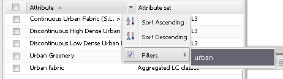

Filtering attribute list
To enable easier searching for attributes, attribute filters are implemented into the dialog for chart attribute list modification.

You can filter attributes via typing key words. Attribute sets can be filtered in the same way.